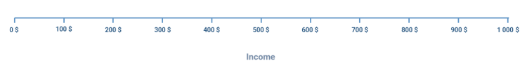
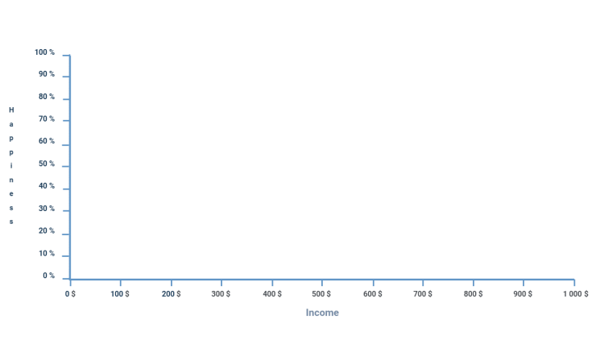

La première partie de l’algorithme pour réaliser un graphique statistique est de créer les axes de ce dernier.
Créons donc 2 fonctions jumelles qui seront vides pour l’instant, mais que nous appellerons createAxeX() et createAxeY().
Ces 2 fonctions prendront les mêmes paramètres suivants qui permettront de personnaliser les axes :
Voici donc à quoi devraient ressembler les 2 fonctions avec tous ces éléments :
See the Pen Untitled by OpenSpirit (@OpenSpirit) on CodePen.
Concentrons-nous maintenant sur l’axe des abscisses, donc sur la méthode createAxeX().
Nous allons en premier lieu dessiner en un trait l’axe, qui fera toute la largeur du Canvas avec une marge de 50 px. Pour connaître les dimensions du Canvas, l’API contient les attributs ctx.canvas.width et ctx.canvas.height.
See the Pen Untitled by OpenSpirit (@OpenSpirit) on CodePen.
Pour observer le résultat, n’oubliez pas d’appeler dans le script la méthode createAxeX() après l’avoir définie.
Maintenant que cet axe s’affiche, ajoutons-y son label. Étant un paramètre optionnel, il faut donc placer ce code dans un if conditionnel.
See the Pen Untitled by OpenSpirit (@OpenSpirit) on CodePen.
Vous pouvez tester le bon fonctionnement en ajoutant des paramètres factices lors de l’appel de la fonction comme dans l’exemple ci-dessous.
See the Pen Untitled by OpenSpirit (@OpenSpirit) on CodePen.
Lien ReplitDans le code précédent, nous utilisons l’attribut de l’API ctx.textAlign qui permet de définir l’alignement du texte, c’est-à-dire si celui-ci doit être centré, aligné à gauche ou aligné à droite.
Il ne nous reste plus qu’à afficher les mesures sur l’axe. Le nombre des mesures à placer est défini par le paramètre marks, tandis que l’échelle de chacune de ces mesures est définie par scale.
Nous allons donc nous servir d’une boucle for et d’un peu de logique mathématique pour décider de comment placer ces mesures.
Tout d’abord, voici la boucle qui nous permettra d’itérer pour le nombre de mesures à placer :
See the Pen Untitled by OpenSpirit (@OpenSpirit) on CodePen.
Dans cette boucle, ajoutons un calcul qui va nous permettre de définir la distance en pixel entre chaque mesure. Cette distance est calculée grâce à la taille de l’axe, soit ctx.canvas.width - 100 (le 100 correspond à la marge en pixel), taille que nous divisons par le nombre de mesures :
See the Pen Untitled by OpenSpirit (@OpenSpirit) on CodePen.
En dessous du calcul de la distance, nous pouvons directement ajouter le code qui dessinera le trait des mesures :
See the Pen Untitled by OpenSpirit (@OpenSpirit) on CodePen.
Il ne nous reste plus qu’à afficher la valeur de la mesure en texte, sans oublier qu’il y a l’unité de la mesure à prendre en compte, étant optionnelle.
See the Pen Untitled by OpenSpirit (@OpenSpirit) on CodePen.
Il ne nous reste plus qu’à essayer cette méthode en l’appelant ainsi avec ces paramètres :
See the Pen Untitled by OpenSpirit (@OpenSpirit) on CodePen.
Lien ReplitVous devriez ainsi obtenir le résultat visuel suivant :
Avant de passer à la suite, il nous faut aussi reproduire la même fonction, mais pour l’axe Y.
Le concept sera le même, néanmoins il n’existe pas de méthode dans l’API Canvas qui permette d’écrire du texte verticalement, ce qui est nécessaire étant donné que l’axe Y est vertical. Voici donc une fonction que vous pouvez ajouter. En l’utilisant, vous pourrez écrire verticalement exactement de la même manière que la méthode fillText().
See the Pen Untitled by OpenSpirit (@OpenSpirit) on CodePen.
Vous possédez désormais tous les éléments pour réaliser la méthode createAxeY() par vous-même, ce à quoi nous vous encourageons afin de mieux prendre en main l’API Canvas.
Voici le résultat que vous devriez obtenir en adaptant la fonction pour l’axe Y :
See the Pen Untitled by OpenSpirit (@OpenSpirit) on CodePen.
Essayons maintenant d’appeler les méthodes de création des axes avec les paramètres ci-dessous :
See the Pen Untitled by OpenSpirit (@OpenSpirit) on CodePen.
Lien ReplitAinsi, le résultat obtenu devrait visuellement correspondre à cet exemple :
